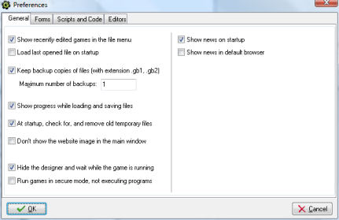
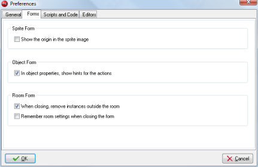
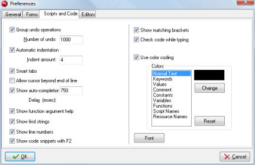
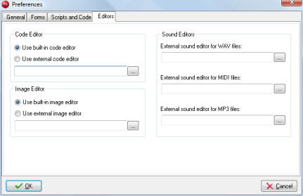

Preferences
Under the Preferences menu item in the File menu you can set a
number of preferences that will be maintained between runs of Game Maker.
The following preferences can be set:
General tab

- Show recently edited games in the file menu.
If checked the eight most recently edited games are shown under the
recent files in the file menu.
- Load last opened file on startup.
If checked when you start Game Maker the most recently opened file
is opened automatically.
- Keep backup copies of files.
If checked the program saves a backup copy of your game with
the extension gb0-gb9. You can open these games in Game Maker.
You are strongly advised to use at least one backup copy for your work!
- Maximum number of backups.
Here you can indicate how many (1-9) different backup copies
should be remembered by the program.
- Show progress while loading and saving files.
If checked, when load or save a file a progress indicator is shown.
- At startup check for, and remove old temporary files.
Game Maker and games created with it, create temporary files.
Normally these are automatically removed but sometimes, for example
when games crash, they are left behind. If this option is checked,
Game Maker checks whether such files exist and removes them at startup.
- Don't show the website in the main window.
When checked the image and link to the website on the main window are not shown.
- Hide the designer and wait while the game is running.
When checked the game making program is hidden while you are testing a game.
- Run games in secure mode.
If checked, any game created with Game Maker that runs on your
machine will not be allowed to execute external programs or change
or delete files at a place different from the game location.
(This is a safeguard against Trojan horses although success is not
guaranteed.) Checking this means that games that utilizes external
files etc. won't be running correctly.
The setting only works while Game Maker is running.
So if you run the game independently of Game Maker, for
example as an executable stand-alone, it is NOT
run in secure mode.
- Show news on startup. Whether to show the Game Maker news
once a day when the program is started. (Cannot be changed in the Lite Edition.)
- Show news in default brower. Whether to show the Game Maker news
in your default Internet browser, rather than in the program itself.
(Cannot be changed in the Lite Edition.)
Forms tab

- Show the origin in the sprite image.
If checked, in the sprite properties form, in the sprite image, the origin
for the sprite is indicated.
- In object properties, show hints for actions.
If checked, in the object properties form, when you hold your mouse
over one of the actions, a description is shown.
- When closing, remove instances outside the room.
If checked, the program warns you when there are instances or tiles
outside a room and lets you remove them.
- Remember room settings when closing the form.
If checked, a number of room settings, like whether to show the grid,
whether to delete underlying objects, etc. are remembered when you
edit the same room later.
Scripts and code tab

These settings relate to the built-in script and code editor.
Most of these settings are explained in detail in the page on Scripts.
Here we just give a short overview:
- Group undo operations When grouped multiple actions (like typing a whole line) becomes
one operation for undo.
- Number of undo You can change this number but in general this should be fine.
- Automatic indentation When set Enter and Backspace keys cleverly deal with indents.
- Indent amount How much to indent with each tab.
- Smart tabs When set tabs go to the position below the first non-empty space in the previous line.
- Allow cursor beyond end of line When checked you can place the cursor at any position in the editor screen,
also beyond the end of line. If unchecked this is not possible. This also changes the behavior
of the left and right arrow keys.
- Show auto-completion options When set help is given on which functions and variables start with the
letters you are typing.
- Dealy (msec) The delay in milliseconds before the help is shown. Set e.g. to 0 for immediate.
- Show function argument help When set, when typing function arguments, in the statusbar help about
this is provided.
- Show find string When set, whenever typing in a find string, all locations are shown in the code.
- Show line numbers Whether the editor should display the line numbers.
- Show matching brackets Whether the editor should indicate matching open en close brackets.
- Show code snippets with F2 When set, pressing F2 will bring up a number of useful code snippets.
- Check code while typing When set the code is constantly checked and errors reported.
- Use color coding Whether to use color coding in the editor.
- Colors Here you can set the colors used for color coding. You can also reset the default colors.
- Font Here you can select the font for the editor. Note that only fixed pitch fonts are shown. Also
note that only the font and the size are used.
Editors

Here you can choose whether to use the built-in code editor (highly recommended) or
an external editor. In the case of an external editor, the script text is saved as
a .txt file and the editor is called with this file as an argument. After editing it
you should save the file and close the editor such that Game Maker can read the
file back in.
Also you can choose whether to use the built-in image editor (highly recommended) or
an external editor. In the case of an external editor, the image is saved as
a .png file and the editor is called with this file as an argument. After editing it
you should save the file and close the editor such that Game Maker can read the
file back in.
Finally you can indicate the different external editors for the sound files you want to use.
Game Maker does not contain internal sound editors. There are three possible editors
handling .wav, .mid and .mp3 files. In the case of an external editor, the sound is saved as
a .wav, .mid, or .mp3 file and the corresponding editor is called with this file as an argument.
After editing it
you should save the file and close the editor such that Game Maker can read the
file back in.
Other Settings
It is also possible to change the location of the temp files that Game Maker creates
to e.g. store the game that is tested. This location cannot be changed from the Preferences but
is changes by creating a file tempdir.txt in the folder where Game Maker is located.
In this file there should be one line containing the location of the folder in which the temp files
are creates, for example C:\GMTEMP. Note that the name must include the complete path
and should not end with a backslash. Each time Game Maker is run a unique temporary folder is
created within this location. So things will work out fine, even when multiple instances of Game Maker
use the same location. (Note that the games themselves also create a temp folder for their files. Again,
this can be changed by creating a file tempdir.txt and placing it in the folder where the game
executable is located.)
Secondly, it is possible to change the image Game Maker is using for the background of its main form.
To this end place an image file back.bmp in the folder where Game Maker is located.